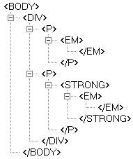
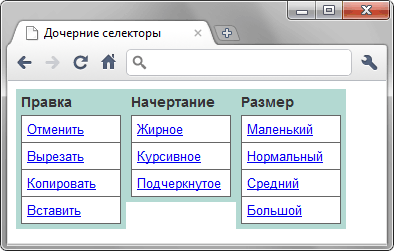

Дочерние селекторы
Дочерним называется элемент, который непосредственно располагается внутри родительского элемента. Какой элемент выступает родителем, а какой его потомком легко выяснить с помощью дерева элементов — так называется структура отношений элементов документа между собой (рис. 1).

Рис. 1. Дерево элементов
На рис. 1 в удобном виде представлена вложенность элементов и их иерархия. Здесь дочерним элементом по отношению к <div> выступает элемент <p>. Вместе с тем <strong> не является дочерним для элемента <div>, поскольку он расположен в контейнере <p>.
Синтаксис
E > F { Описание правил стиля }Стиль применяется к элементу F, только когда он является дочерним для элемента E.
Пример
<!DOCTYPE html>
<html>
<head>
<meta charset="utf-8">
<title>Дочерние селекторы</title>
<style>
#menu {
margin: 0; padding: 0; /* Убираем отступы */
}
#menu > li {
list-style: none; /* Убираем маркеры списка */
width: 100px; /* Ширина элемента в пикселах */
background: #b3d9d2; /* Цвет фона */
color: #333; /* Цвет текста */
padding: 5px; /* Поля вокруг текста */
font-family: Arial, sans-serif; /* Рубленый шрифт */
font-size: 90%; /* Размер шрифта */
font-weight: bold; /* Жирное начертание */
float: left; /* Располагаем элементы по горизонтали */
}
li > ul {
list-style: none; /* Убираем маркеры списка */
margin: 0; padding: 0; /* Убираем отступы вокруг элементов списка */
border-bottom: 1px solid #666; /* Граница внизу */
padding-top: 5px; /* Добавляем отступ сверху */
}
li > a {
display: block; /* Ссылки отображаются в виде блока */
font-weight: normal; /* Нормальное начертание текста */
font-size: 90%; /* Размер шрифта */
background: #fff; /* Цвет фона */
border: 1px solid #666; /* Параметры рамки */
border-bottom: none; /* Убираем границу снизу */
padding: 5px; /* Поля вокруг текста */
}
</style>
</head>
<body>
<ul id="menu">
<li>Правка
<ul>
<li><a href="undo.html">Отменить</a></li>
<li><a href="cut.html">Вырезать</a></li>
<li><a href="copy.html">Копировать</a></li>
<li><a href="paste.html">Вставить</a></li>
</ul>
</li>
<li>Начертание
<ul>
<li><a href="bold.html">Жирное</a></li>
<li><a href="italic.html">Курсивное</a></li>
<li><a href="underline.html">Подчеркнутое</a></li>
</ul>
</li>
<li>Размер
<ul>
<li><a href="small.html">Маленький</a></li>
<li><a href="normal.html">Нормальный</a></li>
<li><a href="middle.html">Средний</a></li>
<li><a href="big.html">Большой</a></li>
</ul>
</li>
</ul>
</body>
</html>В данном примере дочерние селекторы требуются, чтобы разделить стиль элементов списка верхнего уровня и вложенные списки, которые выполняют разные задачи, поэтому стиль для них не должен пересекаться. Результат примера показан на рис. 2.

Рис. 2. Использование дочерних селекторов
Примечание
Браузер Internet Explorer 7 не применяет стиль, если между селекторами располагается комментарий (li > /* больше */ a).
Спецификация
| Спецификация | Статус |
|---|---|
| CSS Selectors Level 3 | Рекомендация |
| CSS 2.1 | Рекомендация |
Браузеры
| Internet Explorer | Chrome | Opera | Safari | Firefox | |
| 7 | 8 | 1 | 3.5 | 1 | 1 |
| Android | Firefox Mobile | Opera Mobile | Safari Mobile |
| 1 | 1 | 4 | 1 |